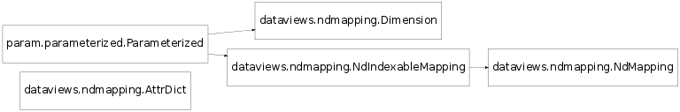

NdIndexableMapping and NdMapping objects.
Bases: param.parameterized.Parameterized
An NdIndexableMapping is a type of mapping (like a dictionary or array) that uses fixed-length multidimensional keys. The effect is like an N-dimensional array, without requiring that the entire multidimensional space be populated.
If the underlying type of data for each (key,value) pair also supports indexing (such as a dictionary, array, or list), fully qualified indexing can be used from the top level, with the first N dimensions of the index selecting a particular piece of data stored in the NdIndexableMapping object, and the remaining dimensions used to index into the underlying data.
For instance, for an NdIndexableMapping x with dimensions “Year” and “Month” and an underlying data type that is a 2D floating-point array indexed by (r,c), a 2D array can be indexed with x[2000,3] and a single floating-point number may be indexed as x[2000,3,1,9].
In practice, this class is typically only used as an abstract base class, because the NdMapping subclass extends it with a range of useful slicing methods for selecting subsets of the data. Even so, keeping the slicing support separate from the indexing and data storage methods helps make both classes easier to understand.
param Parameter data_type (constant=True, default=None, instantiate=True, pickle_default_value=True, precedence=None, readonly=False)
param List dimensions (bounds=(0, None), constant=True, default=[Dimension(cyclic=False, format_string=’{name} = {val}{unit}’, name=’Default’, range=(0, 0), type=None, unit=None)], instantiate=True, pickle_default_value=True, precedence=None, readonly=False)
Create a new object with an additional dimension along which items are indexed. Requires the dimension name, the desired position in the dimension labels and a dimension value that applies to all existing elements.
Returns a clone with matching parameter values and metadata, containing the specified items (empty by default).
Create a new object with a re-ordered or reduced set of dimension labels. Accepts either a single dimension label or a list of chosen dimension labels.
Reducing the number of dimension labels will discard information held in the dropped dimensions. All data values are accessible in the newly created object as the new labels must be sufficient to address each value uniquely.
Bases: dataviews.ndmapping.NdIndexableMapping
NdMapping supports the same indexing semantics as NdIndexableMapping but also supports filtering of items using slicing ranges.
param Parameter data_type (constant=True, default=None, instantiate=True, pickle_default_value=True, precedence=None, readonly=False)
param List dimensions (bounds=(0, None), constant=True, default=[Dimension(cyclic=False, format_string=’{name} = {val}{unit}’, name=’Default’, range=(0, 0), type=None, unit=None)], instantiate=True, pickle_default_value=True, precedence=None, readonly=False)